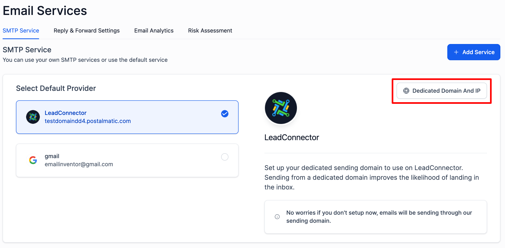
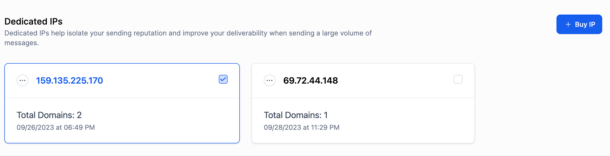
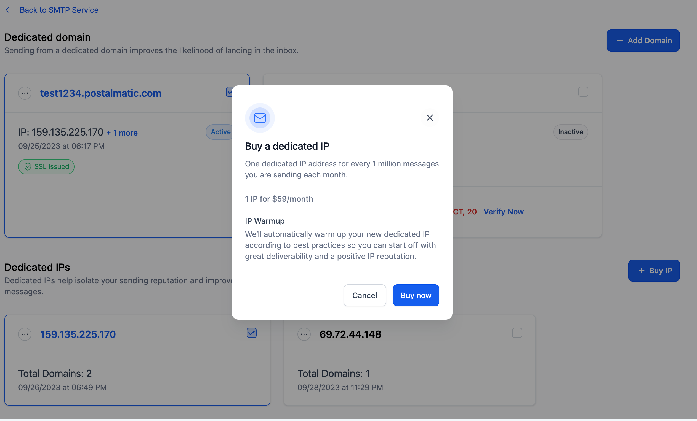
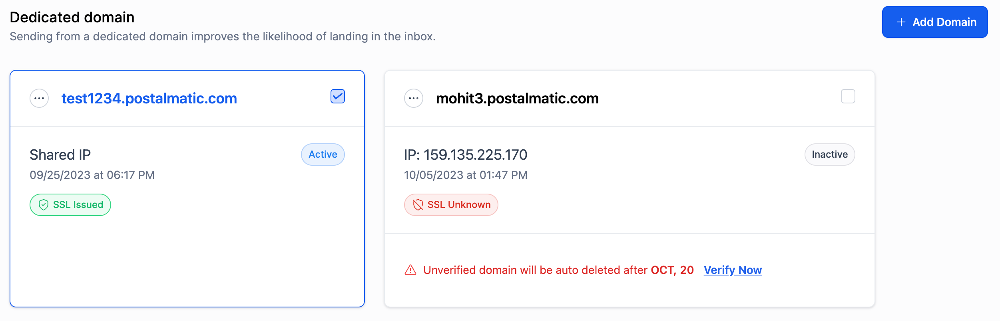
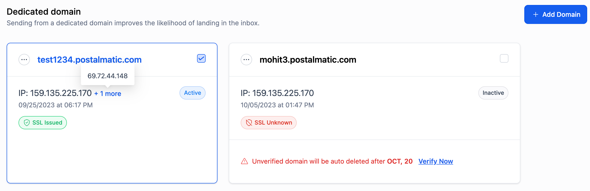
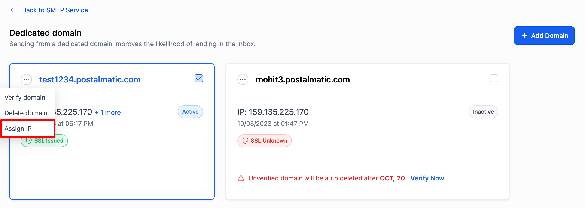
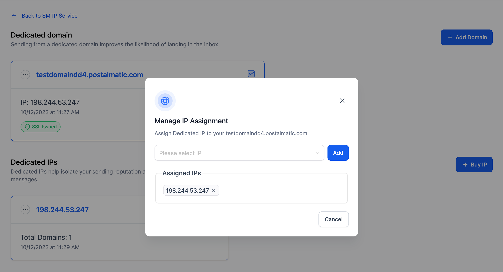

Dedicated IPs offer a distinct advantage by sending your email messages from a unique, exclusive IP address. Email service providers (ESPs) closely monitor the reputation and behaviour of an IP address to determine the deliverability of emails linked to specific domains associated with that IP.
Getting a dedicated IP address provides your organization with exclusive ownership, giving you full control over the management of the email sender reputation and deliverability tied to that IP.
This article will cover What dedicated IP in LC email is, pricing, why the feature was built, and several FAQs.
TABLE OF CONTENTS
- When should I get a dedicated IP address?
- What are the benefits of a dedicated IP?
- What are some tips for sending emails with dedicated IPs?
- How to buy a Dedicated IP?
- How to Manage Your Dedicated IP
- To assign a dedicated IP to a domain:
- How do I set up rDNS?
When should I get a dedicated IP address?
If you're sending a significant volume of emails, in the ballpark of hundreds of thousands to millions per month (especially if exceeding 200,000), it becomes prudent to establish your reputation on a dedicated IP. It's worth noting that obtaining a dedicated IP might be a distinct investment.
Furthermore, when setting up email authentication protocols, including SPF, DMARC, DKIM, and SSL certificates to bolster protection against email spoofing, a dedicated IP becomes vital. Shared IPs don't offer the same level of security, leaving you vulnerable to the actions of other senders using the same IP.
Additionally, possessing a dedicated IP shields you from potential domain hijacking risks, ensuring the integrity and security of your email communications.
What are the benefits of a dedicated IP?
While a dedicated IP might come with higher costs compared to a shared IP, it presents several distinct advantages:
- Enhanced Email and Site Performance: Dedicated IPs often result in faster email delivery and website load times. Renowned email service providers like Gmail and Yahoo tend to favour emails from dedicated IPs, ensuring quicker inbox placement for your messages. Additionally, without sharing bandwidth, your performance isn't influenced by others using the same IP.
- Full Control Over Sender and IP Reputation: As the sole user of a dedicated IP, you have total control over your sending habits, IP reputation, and, for websites, SEO efforts. This allows you to customize your strategies without external interference.
Efficient Problem Resolution: Being the only sender on your dedicated IP simplifies the process of identifying and addressing IP-related issues. Pinpointing problems and implementing solutions becomes more straightforward, improving the overall reliability of your services.
Enhanced Cybersecurity: A dedicated IP provides an additional layer of protection against threats like domain hijacking, malware, and hacking attempts, ensuring better security for your online resources.
In conclusion, while dedicated IPs might be more costly, the tangible benefits they offer in performance, control, problem-solving, and security make them a valuable investment for organizations with significant online and email needs.
What are some tips for sending emails with dedicated IPs?
Within the world of email service providers (ESPs), your reputation is critical. With a dedicated IP, the challenge is to manage email volume and timing adeptly to prevent activating spam filters. Ideally, you should pace your email dispatches, allowing for a gradual increase in volume every 24 hours.
Dedicated IPs are most beneficial when consistently dispatching large volumes of emails. However, sporadic, high-volume sending can be counterproductive, potentially flagging you as a spammer to email filters or even resulting in blocklisting. ESPs are particularly wary of abrupt surges in email dispatches.
If your email traffic is inconsistently high, a shared IP might be more advantageous. This aligns your intermittent high volumes with the steady traffic patterns of other senders on the same IP.
Through thorough testing and adjustments, we've perfected and automated the dedicated IP warm-up process, ensuring a robust sender reputation. If manually warming up your IP isn't for you, our solution offers a seamless experience.
In the ever-changing domain of email delivery, tact and strategy are essential to uphold a stellar reputation with ESPs and guarantee your messages reach their desired recipients.
How to buy a Dedicated IP?
LC Email users can acquire a dedicated IP through the Email service.
- Navigate to the Settings page and click on Email Services.
- Click on Dedicated Domain And IP in the LC email provider section.

- On the next page, click on "Buy IP".

- A modal will appear with the option to buy a new IP. Click on the "Buy Now" button to proceed with the purchase.

How to Manage Your Dedicated IP
If you own a dedicated sending domain, you'll notice a tag indicating whether your domain is associated with a Dedicated or Shared IP.

Please note: A Dedicated IP can only be linked to a dedicated sending domain.
Additionally, you can assign one or more dedicated IPs to your domains. In this configuration, a single domain can be linked to multiple IPs, and vice versa. If your domain is associated with multiple IPs, emails will be sent through all these IPs in a round-robin manner. This method ensures a balanced distribution of email traffic among the IPs linked to your domain.

To assign a dedicated IP to a domain:
Click the three dots and select "Assign IP".

The "IP Assignment" modal will appear, displaying all the IPs you've purchased.

How do I set up rDNS?
Yes, Follow the instructions in this article and setup the rDNS.